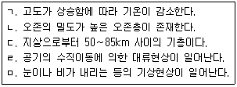
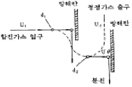
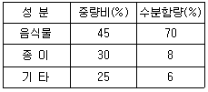
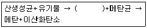

환경기능사 (2005-01-30 기출문제)
1과목: 대기오염방지
1. 중력집진 장치의 침강실에서 입자상 오염물질의 최종침강 속도가 0.2m/sec, 높이가 1.5m일 때 이것을 완전제거하기 위하여 소요되는 이론적인 중력 침강실의 길이(m)는? (단, 집진장치를 통과하는 가스의 속도는 2m/sec임 층류기준)
- 5.0
- 7.5
- 15.0
- 17.5
(정답률: 43%)

2. 굴뚝의 입구와 출구의 온도가 각각 200℃, 100℃이라면, 굴뚝내의 평균가스온도(로그 평균온도)는?(단, log2=0.3, tm= (t1-t2)/(2.3log(t1/t2))
- 135℃
- 140℃
- 145℃
- 150℃
(정답률: 37%)
3. 다음 중 관성력 집진장치의 장점이 아닌 것은?
- 고온처리가 가능하다.
- 운전비용이 적게 든다.
- 미세한 입자 포집율이 높다.
- 구조가 간단하고 취급이 간단하다.
(정답률: 41%)
4. 집진효율이 50%인 중력집진장치와 집진효율이 99%인 여과집진장치가 차례로 결합된 집진시설이 있다. 중력집진장치에 유입되는 먼지의 농도가 1,000mg/Sm3일 때, 여과집진장치의 출구 먼지 농도는?
- 1mg/Sm3
- 5mg/Sm3
- 10mg/Sm3
- 15mg/Sm3
(정답률: 49%)
5. 흡착법에 관한 설명으로 알맞지 않은 것은?
- 가스가 흡착층내에 머무르는 체류시간이 충분해야 한다.
- 화학적흡착인 경우 흡착과정이 가역적이며 흡착제의 재생이 가능하다.
- 흡착제의 흡착능력이 충분해서 사용기간이 길어야 한다.
- 오염가스를 회수할 가치가 있는 경우에 유용한 방법이다.
(정답률: 74%)
6. 일반적으로 광원으로 나오는 빛을 단색화장치에 의하여 좁은 파장범위의 빛만을 선택하여 액층을 통과시킨 다음 광전촉광으로 광도를 측정하여 성분의 농도를 정량하는 분석 방법은?
- 가스크로마토 그래피법
- 흡광광도법
- 원자흡광광도법
- 비분산 적외선분석법
(정답률: 68%)
7. LNG의 주성분은 무엇인가?
- 메탄
- 부탄
- 코크스
- 프로판
(정답률: 66%)
8. 다음 보기에서 대류권에 해당하는 사항만을 모두 고르면?

- ㄱ, ㄴ, ㄷ
- ㄴ, ㄷ, ㄹ
- ㄷ, ㄹ, ㅁ
- ㄱ, ㄹ, ㅁ
(정답률: 76%)
9. 탄소 85%, 수소 13%, 황 2% 조성의 중유를 완전 연소시키기 위한 이론 공기량(Sm3/㎏)은?
- 약 5
- 약 7
- 약 9
- 약 11
(정답률: 37%)
10. 그림과 같은 집진원리를 갖는 집진장치 명칭은?

- 관성력집진장치
- 중력집진장치
- 전기집진장치
- 원심력집진장치
(정답률: 73%)
11. 중유의 탈황 방법과 가장 거리가 먼 것은?
- 방사선 화학적 탈황
- 금속산화물에 의한 흡착탈황
- 미생물에 의한 생화학적 탈황
- 접촉산화물에 의한 흡착탈황
(정답률: 38%)
12. 다음 중 광화학 스모그를 발생시키는 원인물질과 가장 거리가 먼 것은?
- 질소산화물
- 탄화수소
- 자외선
- 먼지
(정답률: 58%)
13. 배출가스량과 이동속도를 감안하여 닥트의 단면적과 관경을 산정하는 공식은? (단, A=관의 단면적 m2, Q=배출가스량 m3/min, V=닥트내 유속 m/sec, D=닥트의 직경 m)
- A =Q/V, D = (4A/Å)2
- A =Q/V, D = (4A/Å)1/2
- A =Q/(V×60) , D = (4A/Å)2
- A =Q/(V×60) , D = (4A/Å)1/2
(정답률: 45%)
14. 자동차에서 배출되는 대기오염 물질 중 탄화수소(HC)가 가장 많이 배출되는 곳은?
- 배기관(muffler)
- 기화기(carbureter)
- 연료탱크(fuel tank)
- 크랭크케이스(crank case)
(정답률: 72%)
15. 다음 기체 중 비중이 가장 큰 것은?
- HCHO
- CS2
- SO2
- CO2
(정답률: 59%)
2과목: 폐수처리
16. 바닷물(해수)에 관한 설명으로 틀린 것은?
- 해수는 수자원 중에서 97% 이상을 차지하나 사용목적이 극히 한정되어 있는 실정이다.
- 해수의 pH는 약 8.2 정도로 약알칼리성을 띠고 있다.
- 해수는 약전해질로 염소이온농도가 약 10000ppm 정도이다.
- 해수의 주요성분 농도비는 항상 일정하다.
(정답률: 62%)
17. 우리나라 수질오염공정시험방법에서 COD 측정법에 사용되는 산화제는?
- H2O2
- MnO2
- KMnO2
- K2Cr2O7
(정답률: 42%)
18. 생물학적 원리를 이용하여 인과 질소를 동시에 제거하는 공법의 공정 중 혐기조의 역할을 알맞게 나타낸 것은?
- 유기물제거, 인의 과잉 흡수
- 유기물제거, 인의 방출
- 유기물제거, 탈질소
- 유기물제거, 질산화
(정답률: 75%)
19. 한 침전지가 9000m3/day의 하수를 처리한다. 침전지의 유입하수의 SS농도가 500mg/L, 침전지 유출수의 SS농도가 200mg/L이라면 이 침전지의 SS제거율은?
- 30%
- 40%
- 50%
- 60%
(정답률: 32%)
20. 유입하수량이 2000m3/일 이고 침전지의 용적이 250m3일 때 이 침전지의 체류시간은?
- 3시간
- 4시간
- 6시간
- 8시간
(정답률: 36%)
21. 호기성 미생물에 의한 유기물 분해시 최종 산물은?
- CH4, H2O
- CO2, H2O
- HC, H2O
- O2, H2O
(정답률: 64%)
22. 폐수처리에 있어서 활성탄의 용도로서 가장 옳은 것은?
- 생물학적 처리를 거친 폐수내에 남아 있는 유기물을 좀 더 흡착 제거시키는데 사용한다.
- 폐수의 전처리 공정에서 유기물질만 흡착 제거시키는데 사용한다.
- 폐수의 화학적 처리에서 수소이온농도를 높이는데 사용한다.
- 폐수의 물리적 처리에서 폐수의 침강성을 높이기 위해서 사용한다.
(정답률: 53%)
23. 활성슬러지의 용적지수(SVI)를 측정시 침강시간은?
- 30분
- 45분
- 60분
- 120분
(정답률: 46%)
24. 최초 유입폐수의 BOD농도 400mg/L, 폐수량 200m3/day를 살수여과상으로 처리하고자 한다. 살수여과처리전 BOD는 전처리 및 1차처리에서 각각 20%씩 제거된다면 살수여과상의 BOD 용적부하가 1.6kg/m3-day 일 때 필요한 여과상의 용적은?
- 32m3
- 37m3
- 42m3
- 47m3
(정답률: 30%)
25. 수질관리를 위하여 대장균군을 측정하는 주목적은?
- 유기물질의 오염정도를 측정하기 위하여
- 병원균의 존재 가능성을 알기 위하여
- 수질의 미생물 성장가능 여부를 알기 위하여
- 공장폐수의 유입여부를 알기 위하여
(정답률: 67%)
26. BOD 측정에 관한 설명중 옳지 않은 것은?
- BOD가 높은 하수는 희석해서 시험한다.
- 미생물이 없는 시료는 하천수 등으로 식종한다.
- 측정값은 부란전 DO의 80%이상 소비되는 것을 채택한다.
- DO가 과포화된 것은 수온을 23-25℃로 통기, 방냉하여 수온을 20℃로 한다.
(정답률: 43%)
27. 농황산의 비중이 1.84, 농도는 75(W/W/%) 정도라면 이농황산의 몰농도(mole/L)는? (단, 농황산의 분자량은: 98 )
- 10
- 12
- 14
- 16
(정답률: 48%)
28. 0.01M—HCl용액의 pH는?(단, HCl은 100%이온화 )
- 1
- 2
- 3
- 4
(정답률: 59%)
29. 여과지 운전중에 발생할 수 있는 주요 문제점과 가장 거리가 먼 것은?
- 진흙 덩어리의 축적
- 여재층의 혼합
- 여재층의 수축
- 공기 결합
(정답률: 35%)
30. 명반을 폐수의 응집조에 주입후, 완속교반을 행하는 주된 목적은?
- floc의 입자를 크게 증가시키기 위하여
- floc과 공기를 잘 접촉시키기 위하여
- 명반을 원수에 용해시키기 위하여
- 생성된 floc의 수를 증가시키기 위하여
(정답률: 62%)
31. 어느 하수처리장에서 활성슬러지 공법으로 처리하고자 한다. 유량이 20,000m3/day, BOD가 250mg/L 인 하수를 24시간 Blower를 가동시켜 150m3/min율로 공기를 공급하여 BOD를 80% 제거한다면 제거된 BOD 1kg당 소모된 공기량은?
- 96 m3air/kg-BOD
- 76 m3air/kg-BOD
- 54 m3air/kg-BOD
- 48 m3air/kg-BOD
(정답률: 37%)
32. 박테리아에 관한 설명으로 틀린 것은?
- 가장 간단한 식물로서 용해된 유기물을 섭취한다.
- 막대기모양, 공모양, 나선모양 등이 있다.
- 일반적인 화학조성식은 C5H7O2N로 나타낼 수 있다.
- 60%는 수분, 40%는 고형물질로 구성되어 있다.
(정답률: 70%)
33. 펜턴(Fenton) 산화반응이란 어떤 반응인가?
- 황화수소의 난분해성 유기물질 산화
- 오존의 난분해성 유기물질 산화
- 과산화수소의 난분해성 유기물질 산화
- 아질산의 난분해성 유기물질 산화
(정답률: 62%)
34. 저속 살수여상에 관한 설명으로 적절한 것은?
- 공극률이 높다.
- 수리학적 부하가 높다
- 부하가 낮아 파리가 번식하지 않는다
- 폐쇄현상이 일어나기 쉽다.
(정답률: 45%)
35. 다음중 폐수의 응집처리시 응집의 원리로서 볼 수 없는 것은?
- Zeta potential을 감소시킨다.
- Van Der Waals를 증가시킨다.
- 응집제를 투여하여 입자끼리 뭉치게 한다.
- 콜로이드 입자의 표면전하를 증가시킨다.
(정답률: 44%)
3과목: 폐기물처리
36. 매립지의 차수시설 재료로 가장 거리가 먼 것은?
- 점토
- 자갈
- 시멘트
- 합성수지
(정답률: 45%)
37. 쓰레기의 고위발열량이 10,000kcal/kg 이고 수소 조성비가 10%, 수분함량이 10%일 때 저위발열량은?
- 9,000 kcal/kg
- 9,200 kcal/kg
- 9,400 kcal/kg
- 9,600 kcal/kg
(정답률: 47%)
38. 폐기물의 파쇄작용이 일어나게 되는 힘의 종류가 아닌 것은?
- 압축작용
- 전단작용
- 인장작용
- 충격작용
(정답률: 75%)
39. 가로 1.2m, 세로 2m, 높이 12m의 연소실에서 저위 발열량이 10,000kcal/kg인 중유를 1시간에 10kg씩 연소시킨다면 연소실의 열 발생률은 얼마인가?
- 2888 kcal/m3·hr
- 3472 kcal/m3·hr
- 4985 kcal/m3·hr
- 5644 kcal/m3·hr
(정답률: 47%)
40. 폐기물 처리시 에너지를 회수 또는 재활용 할 수 있는 처리법과 가장 거리가 먼 것은?
- 호기성소화
- 열분해
- 발효
- RDF
(정답률: 31%)
41. 1차 침전지에서 슬러지를 인발하였을 때 함수율이 99% 이었다. 이 슬러지를 97%로 농축시켰더니 33.3m3 이 되었다면 1차 침전지에서 인발한 양(m3)은?
- 79
- 100
- 135
- 150
(정답률: 40%)
42. 매립지에서의 침출수 발생량에 영향을 미치는 인자와 가장 거리가 먼 것은?
- 강우침투량
- 유출계수
- 증발산량
- 지하수량
(정답률: 51%)
43. 유기성 폐기물을 이용하여 만들어진 퇴비의 특성으로 볼 수 없는 것은?
- 병원균이 거의 사멸된다.
- C/N 비율이 80∼90으로 높아진다.
- 악취가 없는 안정한 유기물이다.
- 양이온 교환능력과 수분 보유능력이 우수하다.
(정답률: 53%)
44. 다음중 정상적으로 운영되는 도시쓰레기(여러종류의 유기물 포함) 매립장에서 가장 많이 발생하는 가스성분은?
- 일산화탄소
- 이산화질소
- 메탄
- 부탄
(정답률: 70%)
45. 다음은 어느 도시 쓰레기에 대하여 성분별로 수분함량을 측정한 결과이다. 이 쓰레기의 평균 수분함량(%)은?

- 33.2%
- 35.4%
- 37.7%
- 39.1%
(정답률: 55%)
46. 슬러지 처리의 일반적 혐기성 소화과정이 아래와 같다면 ( )안에 들어갈 알맞은 단어는?

- 탄산
- 황산
- 무기산
- 유기산
(정답률: 71%)
47. 다음 중 뒤롱(Dulong) 식과 관계 있는 발열량 분석법은?
- 단열 열량계법
- 직접 연소법
- 원소 분석법
- 물질 수지법
(정답률: 40%)
48. 다음 중 지정 폐기물의 유해성을 구분하는 분류 기준과 가장 거리가 먼 것은?
- 인화성
- 반응성
- 부식성
- 용해성
(정답률: 42%)
49. 슬러지를 열이나 약품 등을 이용하여 개량(conditioning)하는 가장 큰 이유는?
- 악취 제거
- 병원균 사멸
- 비료가치 향상
- 탈수성 향상
(정답률: 61%)
50. 부피가 100m3인 알루미늄캔을 압축하여 10m3로 처리하였다 압축비는?
- 0.1
- 0.5
- 2
- 10
(정답률: 45%)
51. 고형물 함량이 3%인 액상 폐기물 1000kg을 증발 농축시켜 고형물 함량을 25%로 했을 경우 제거해야할 수분은?(단, 비중 1.0 기준)
- 670kg
- 740kg
- 810kg
- 880kg
(정답률: 33%)
52. 폐기물 발생량 산정법 중 직접 계근법의 단점은?
- 밀도를 고려해야 한다.
- 작업량이 많다.
- 정확한 값을 알기 어렵다.
- 폐기물의 성분을 알아야 한다.
(정답률: 71%)
53. 슬러지 처리의 단계별 방법이 잘못 연결된 것은?
- 농축-중력식
- 안정화-세정
- 개량-열처리
- 탈수-진공여과
(정답률: 40%)
54. 밀도가 250kg/m3인 쓰레기를 압축시켰더니 밀도가 500kg/m3이었다. 압축후 부피는? (단, 압축전 부피: 1 기준)
- 1/5
- 1/4
- 1/3
- 1/2
(정답률: 57%)
55. 유기물질을 완전연소 시키기 위한 조건이라 볼 수 없는 것은?
- 충분한 온도
- 연소시간
- 적절한 수분공급
- 적절한 혼합
(정답률: 67%)
4과목: 소음 진동학
56. 바닥면적이 5m抉6m이고, 높이가 3m인 방에서 바닥, 벽, 천장의 흡음율이 각각 0.1, 0.2, 0.7일 때 평균흡음률은?
- 0.295
- 0.312
- 0.375
- 0.457
(정답률: 17%)
57. PWL이 100㏈일때의 음향출력은 몇 Watt가 되겠는가?
- 0.01
- 0.1
- 1
- 10
(정답률: 44%)
58. 진동레벨계측정기 성능기준으로 부적합한 것은?
- 측정가능 주파수 범위 : 1 - 90 Hz 이상
- 측정가능 진동레벨 범위 : 45 - 120 dB 이상
- 진동픽업의 횡감도 : 5 dB 이상
- 지시계의 눈금오차 : 0.5 dB 이내
(정답률: 38%)
59. 투과계수(transmission coefficient)가 0.001일 때 투과 손실량은?
- 20㏈
- 30㏈
- 40㏈
- 50㏈
(정답률: 59%)
60. 음압의 실효치가 2log10-1[N/m2]인 평면파의 경우 음의 세기는 몇 [W/m2]인가? (단, 상온기준으로 공기의 평균밀도:1.2㎏/m3, 음속은 340m/sec 이다.)
- 10-1
- 10-2
- 10-3
- 10-4
(정답률: 30%)
침강속도 = (중력 가속도 × 입자 밀도 × 입자 지름²) / (18 × 점성계수 × 침강체적)
여기서 중력 가속도는 9.81m/s², 입자 밀도는 1000kg/m³, 입자 지름은 미지수, 점성계수는 0.00089Pa·s, 침강체적은 미지수입니다.
높이가 1.5m이므로 침강체적은 1.5 × A로 나타낼 수 있습니다. 여기서 A는 중력 침강실의 단면적입니다.
가스의 속도가 2m/sec이므로, 침강실의 첫 번째 단면에서 입자가 침강하기 시작하면 그 다음 단면에서는 2m/sec의 속도로 이동하게 됩니다. 따라서 침강실의 길이는 1.5m / 2m/sec = 0.75초가 소요됩니다.
따라서 침강체적은 0.2m/sec × 0.75초 × A = 0.15A가 됩니다.
이를 위의 침강속도 식에 대입하면 다음과 같습니다.
0.2m/sec = (9.81m/s² × 1000kg/m³ × 입자 지름²) / (18 × 0.00089Pa·s × 0.15A)
이를 정리하면 입자 지름² = 0.00089Pa·s × 0.15A × 0.2m/sec × 18 / (9.81m/s² × 1000kg/m³) = 0.00024A
따라서 A = 입자 지름² / 0.00024입니다.
정답이 "15.0"인 이유는, 보기에서 주어진 값 중에서 A가 15.0일 때 입자 지름²가 0.0036이 되기 때문입니다. 이를 위의 식에 대입하면 침강속도가 0.2m/sec가 됩니다. 따라서 이론적인 중력 침강실의 길이는 1.5m / 2m/sec × 0.75초 = 0.5625m가 되며, 이는 보기에서 주어진 값 중에서 "15.0"에 해당합니다.